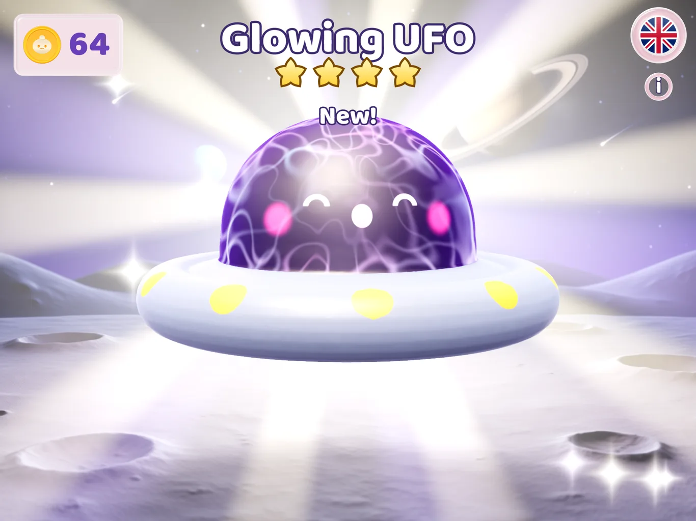
Open a box and see who is inside
Tear off the band, cut the film and lift the lid. Light pours out, and there it is: a new squishy. Every box is a small surprise, and the rare ones glow.
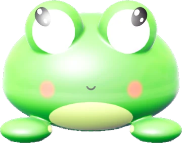

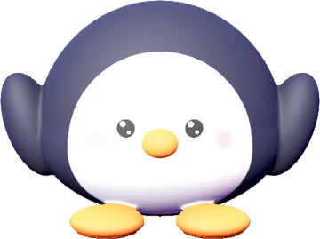


Open the box. Squish what's inside.
A soft, calm collecting game for children aged 3 to 8. More than 90 squishies to find, squish and look after.
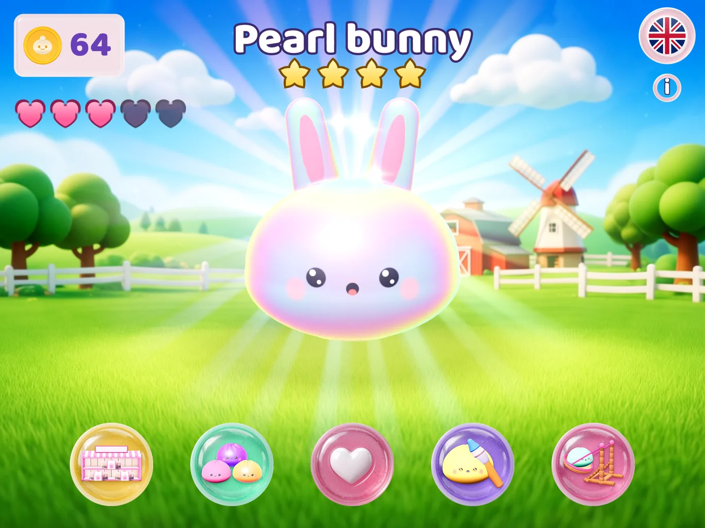

Tear off the band, cut the film and lift the lid. Light pours out, and there it is: a new squishy. Every box is a small surprise, and the rare ones glow.
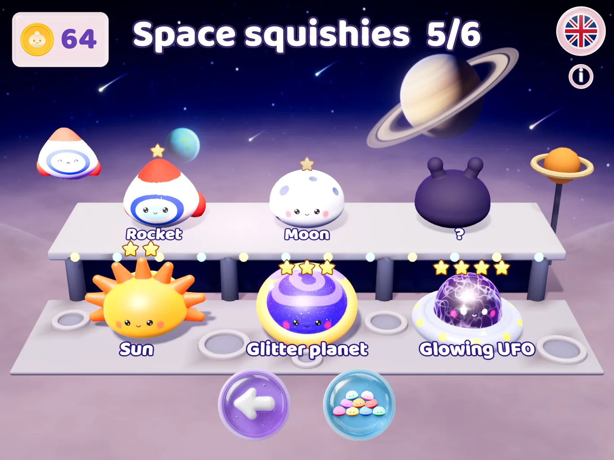
Fourteen series, each with its own shelf: animals, food, sea, space, dinosaurs, bugs, birds, sport, party and more. Stars show how rare a squishy is, from one star to four.
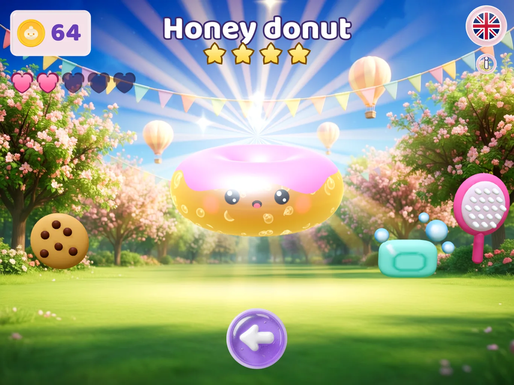
Press, pull and throw a squishy and it wobbles like jelly. Give it a biscuit, wash it with soap, brush it. Nothing has to be done and nothing is ever lost. The more you play together, the fonder it gets.
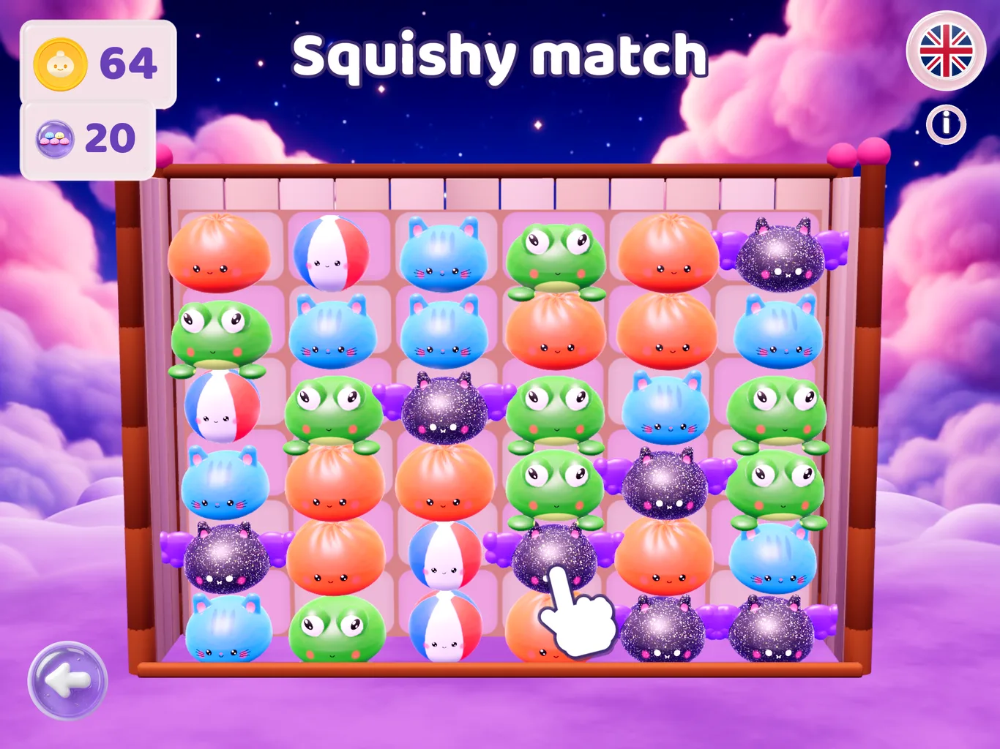
Match three, stack a tower, catch, find pairs, hop on clouds, pop up, fly and launch. Every game gives coins, and coins buy new boxes. Coins come from playing only.
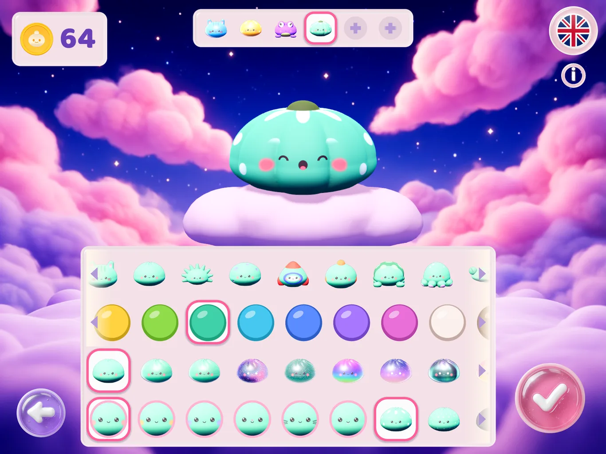
Choose a shape, a colour, a finish and a face in the workshop, and your own squishy joins the collection.
A children's game made the way we think children's games should be.
You buy the game in the store and that is all. Nothing to buy inside it, no subscriptions.
No advertising of any kind. The one link out of the game, to the privacy notice, is behind a check for grown-ups.
No accounts, no analytics and no data collected. The game works without the internet.
Picture buttons and a pointing hand show what to do, so the youngest can play alone.
No daily chores, no streaks, and a collection that never shrinks. Play for two minutes or twenty.
Tap the flag to change language.
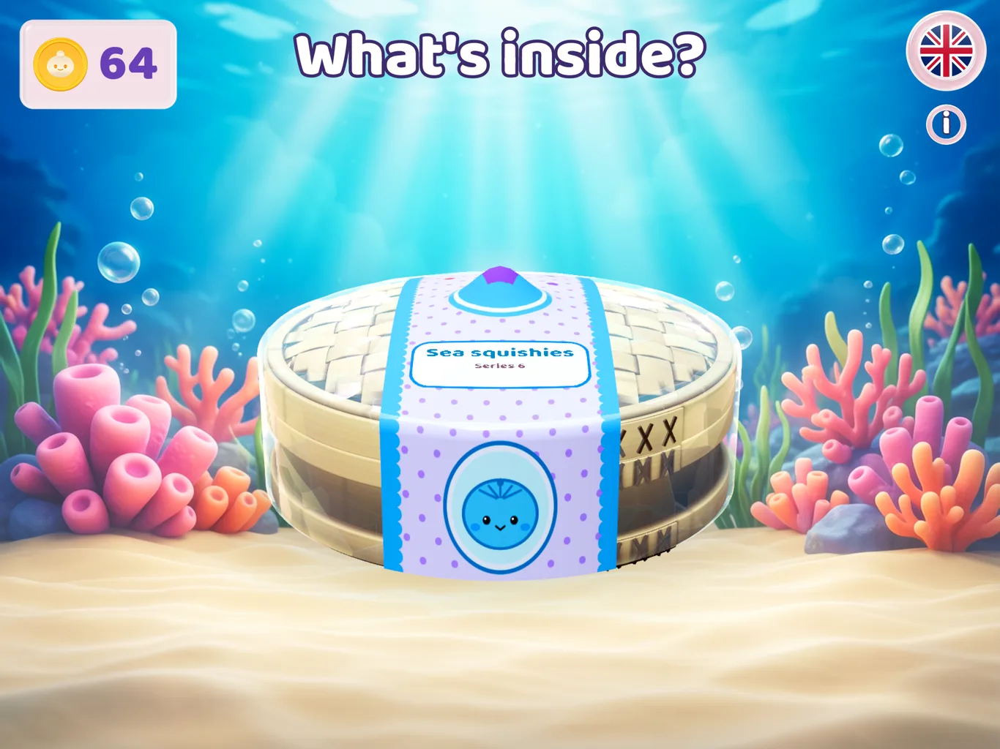
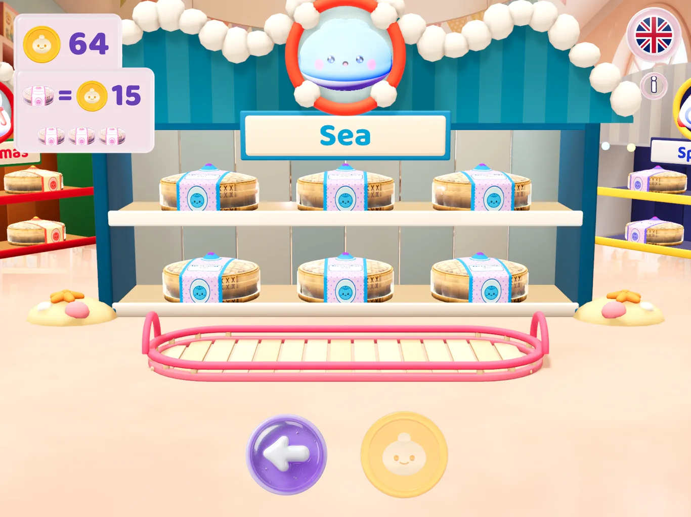
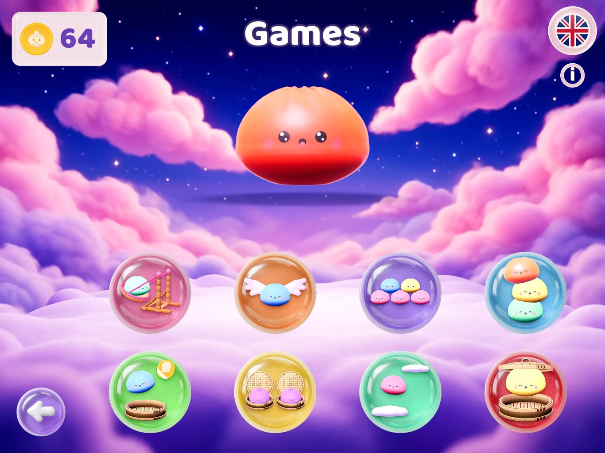
Squishies is a collecting game for young children. A child opens boxes, finds soft toy characters called squishies, squishes them, looks after them and plays small games with them. It is made by Snellingen Studio in Norway.
It is made for children aged 3 to 8. No reading is needed: the buttons are pictures, and a pointing hand shows what to do.
iPad (iPadOS 17 or later) and Android tablets and phones.
No. The game is paid for once in the store. It has no ads, no in-app purchases and no subscriptions. The coins in the game are earned by playing and cannot be bought.
No. The game has no accounts and no analytics, and it sends nothing from the device. Progress is saved on the device only.
No. Once installed, it works fully offline.
More than 90, in fourteen series, in four grades of rarity. Children can also make their own in the workshop.
Norwegian and English.
Soon, on the App Store and Google Play. This page will have the links when it is.